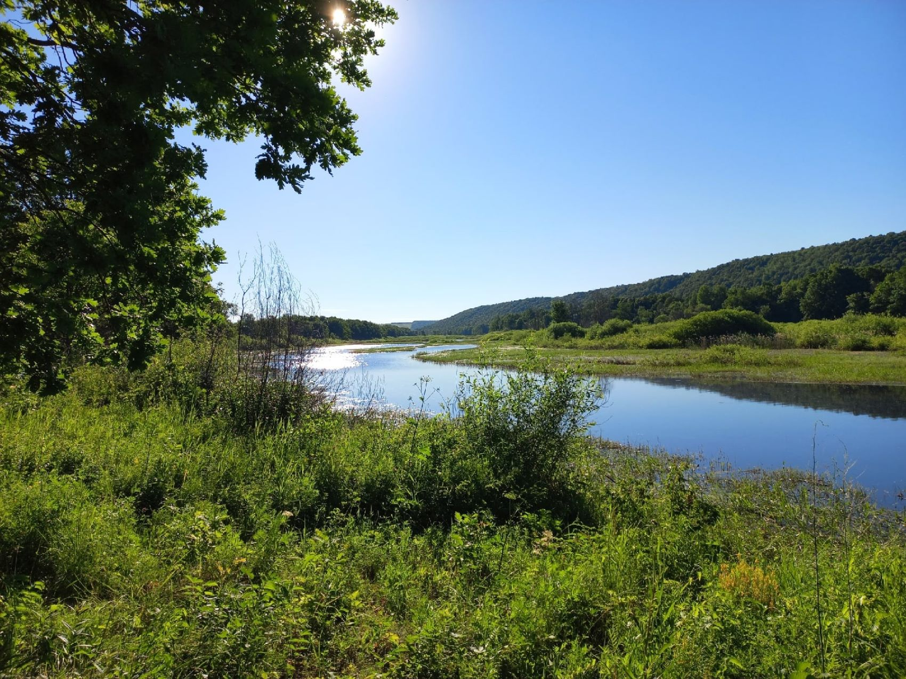

Нижнека́мский райо́н (тат. Түбән Кама районы) — административно-территориальная единица и муниципальное образование (муниципальный район) в составе Республики Татарстан Российской Федерации. Расположен на левом берегу реки Кама. Административный центр — Нижнекамск. На начало 2020 года численность населения района составила 276 326 человек[3][4]. Первые упоминания поселений территории современного Нижнекамского района относятся к XVII веку. Нижнекамский район в современном виде был образован в 1965 году путём выделения земель из Челнинского района[5]. Нижнекамский район — один из ключевых нефтеперерабатывающих территорий Татарстана. В 2017 году районный центр — город Нижнекамск — получил статус ТОСЭР[6]. Первые поселения на территории современного Нижнекамского района датируются XVII веком. В этот период построили село Богородское (сейчас Шереметьевка), город Старошешминск, сёла Кармал, Городище, Елантово, Кулмакса, Нижняя Уратьма. В XVIII веке сформировались населённые пункты Нижнее Афанасово, Ачи, Смыловка, Сименеево, Верхние Челны. Известно, что жители посёлка Красный Ключ в основном занимались полеводством и скотоводством. Основная часть современного Нижнекамского района входила в Мензелинский уезд Уфимской губернии[11]. В 1920-е годы советская власть ввела понятие кантонов, западная часть земель современного Нижнекамского района с селом Шереметьевка, Старошешминском и другими поселениями входили в Чистопольский кантон. До 1950-х годов Татарская АССР ввозила нефтепродукты из соседних республик, но уже в середине 1950-х было принято решение о создании собственного нефтехимического производства — сразу после открытия нефтяных месторождений в соседних районах. В мае 1958 года правительство СССР решило застроить Нижнекамскую землю, начали разрабатывать генеральный план нефтехимического комплекса. В 1960 году в село Афанасово прибыли первые бригады строителей химкомбината, а 19 апреля 1961 года Указом Президиума Верховного Совета Татарской АССР зарегистрирован вновь возникший населённый пункт Афанасьевского сельсовета Челнинского района, ему присвоили название — Нижнекамск. На тот момент население составляло около 500 человек. 12 января 1965 года из Челнинского выделяется Нижнекамский район, включая в себя бывший Шереметьевский район, упразднённый тремя годами ранее. Через год рабочему посёлку Нижнекамск присвоили статус города. В 1985 году в состав Нижнекамского вошли Сосновский, Кармалинский и Елантовский сельсоветы. В 1980-х в районе началось строительство атомной электростанции и города Камские Поляны — почти сразу начался конфликт с экологами из-за аварии на Чернобыльской АЭС, и строительство прекратили.
